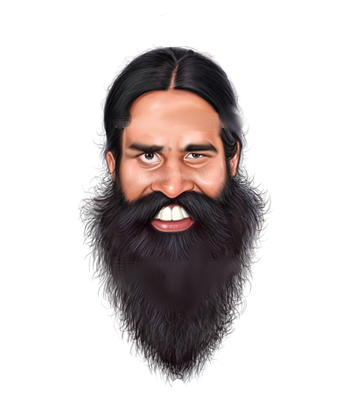

BoardBaba is an online markerboard. You can share the whiteboard with anyone in this world and share your ideas in realtime.(html5 canvas)
Create & Share your MarkerBoard.
View the public MarkerBoard.
Please use Google Chrome. We've made this in.. like... 6 hours. (ofcourse we needed something like this,thats why.)
we use this with bamboo tablet. You use too. And, none of us is a baba, though it is awesome cool to be one. we couldn't think of any other name. :D
PS: baba is awesome! \m/ yo baba! you're the man! And ofcourse, this one is forked from 'balaclark' on github. check him out. And yes this will be available on git hub soon. contact us at team.croakus@gmail.com